Issues¶

Important concepts¶
Issues form¶
From this screen, you have the following options:
- List the issues
- Create an issue
- Edit an issue
- Delete an issue
Listing issues¶
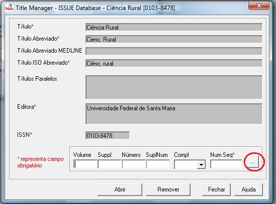Clicking on the

button to list all the issues.
If you want to list all the numbers of a given volume, fill the volume field, then click on the
button.
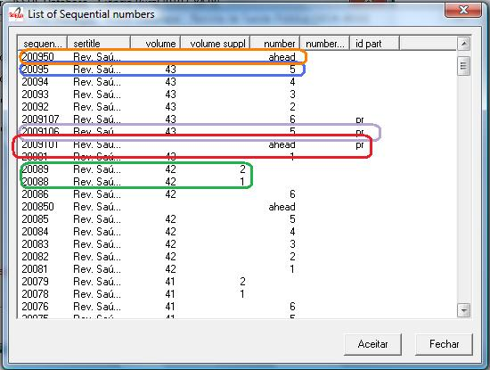
The first highlighted line in orange is one example of ahead numbers of the year 2009.
The second highlighted line in blue is an example of a regular number.
The third highlighted line in purple is an example of press release number of v43n5 (blue).
The fourth line highlighted in red is an example of number press release ahead to 2009 (orange).
The lines highlighted in green are examples of supplement of volume.
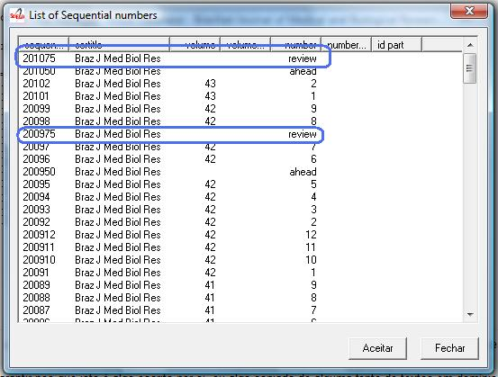The lines are highlighted examples of numbers review / provisional.
Identifying the issue and its sequential number¶
To create, edit or remove, identify the issue, filling the volume, issue, supplement, complement, sequential number. Read about it.
Issue identification¶
Identifying regular issues¶
Fill the volume and number.
The sequential number is the year followed by the order of the issue within a year. Eg: 20101 (first issue within a year).
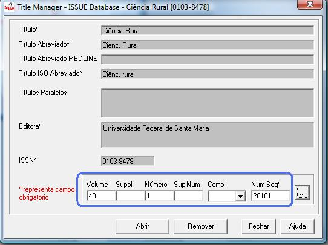Identifying supplements¶
When they exist, fill volume, supplement of volume (when there is no number), number, and supplement of number.
If the supplement is identified only with the word Supplement, fill in with 0, otherwise the label which identifies the supplement, for example, 1, A, etc.
On the site, so that all supplements are presented after the regular issues within a year, the sequential numbers of the supplements must be greater than the sequential number of the last regular issue. Eg: If there are 4 regular numbers in the year, then the sequential number for the supplements starts in 5.
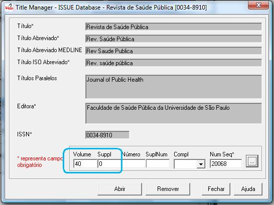Identifying ahead or review / provisional issues¶
Fill in the number field the word ahead, for ahead issue. By convention its sequential number is 50. Fill in the number field the word review, for review or provisional issue. By convention its sequential number is 75.
The sequential number is the year followed by the order of the issue within year, but by convention:
- Ahead is equal to 50
- Review / provisional is equal to 75
Indentifying press release issues¶
Populate the same fields in accordance with the rules above, plus pr in the complement. The sequential number is the year followed by the order of the issue within a year, but by convention starts in 100.
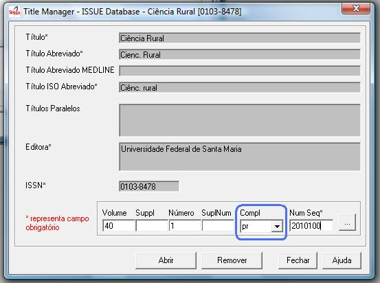Problems on filling the sequential number¶
When the sequential number and the issue identification do not match, the program presents two conflict situations:
Sequential number belonging to another issue¶
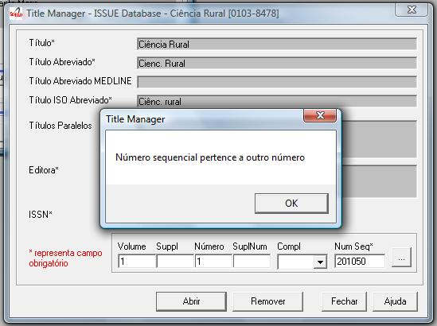When the user informs a sequential belonging to another issue, the program does not open the issue data, and informs the sequential number belongs to another issue.
It is also possible that the user have misinformed the issue identification and not the sequential number. The user is responsible for checking and correcting the data filled in before proceeding.
Mistake or replacement?¶
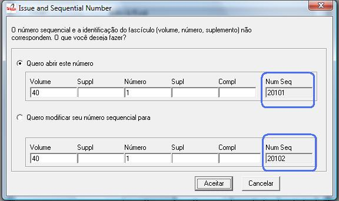When the user reports an issue identification and a sequential number which do not match and the sequential number DOES NOT BELONG TO another issue, the program allows to:
- open the issue, using the identification informed, but correcting its sequential number
- change the issue’s sequential number to the informed one
Creating/editing an issue¶
- Identify the issue. Read Issue identification.
- Click on the Open button
General data¶
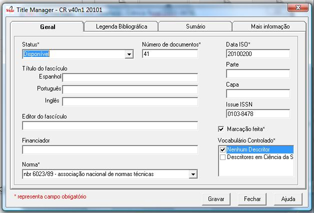
Number of documents¶
Field: 122
Number of documents (articles and texts) of the issue. Converter checks this value with the amount of files in the folder serial/<acronimo>/<issueid>/markup.
Date ISO¶
Field: 65
Date of publication of the issue in ISO format (YYYYMMDD) = 4 digit year, followed by two digits for month, 2 digits for day, with possible 00 if the day is not important.
This date is used to generate the bibliographic strip (next screen) and it is also used by Converter to check the date.
Issue’s title¶
Field: 33
This field must be filled, if there is/are the issue’s title. Thematic or special issues usually have it.
Cover¶
Field: 97
Part¶
Field: 34 Into disuse.
ISSUE ISSN¶
Field: 35
Fill it with the ISSN used by the journal at the time this issue was published.
Markup done¶
Field: 200
It indicates whether the Markup of this issue has already been done. If so, the issue will not be listed on Markup program.
Bibliographic strip¶
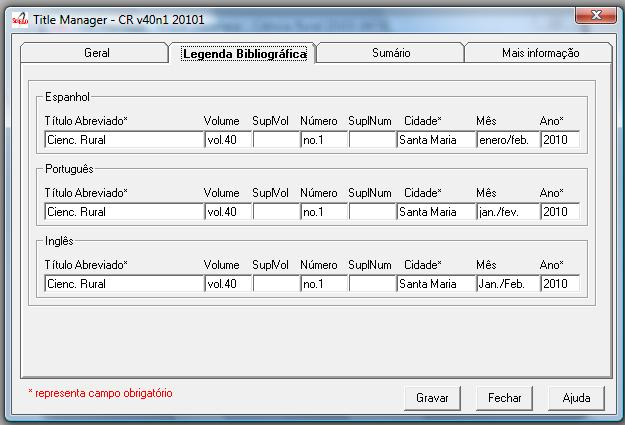
- Field 43, one occurrence for each language (es, en, pt).
- Subfield l: possible values: es (for Spanish), pt (for Portuguese) or en (for English)
- Subfield t: abbreviated title, value from the Title/Field 150.
- Subfield v: volume
- Subfield w: Supplement of Volume
- Subfield n: number
- Subfield s: Supplement of number
- subfield c: publisher location
- Subfield m: month of publication, generated automatically by the ISO date provided in the previous screen, however, editable
- Subfield y: year of publication, automatically generated by the ISO date provided in the previous screen. This value is checked against ISO date.
Table of contents¶
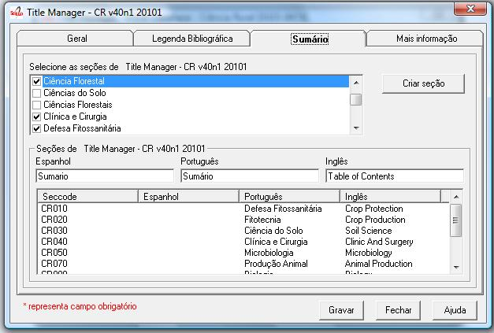
On this screen, the table of contents.
The user must choose the sections that are part of the issue.
The program will present the table below, sorted by language.
If there are missing sections, the user must click on Create sections which open a screen for the Sections’ form.
Header of table of contents¶
Field: 48, one occurrence for each language (es, pt, en).
- Subfield l: language header. pt (Portuguese), es (Spanish), en (English)
- Subfield h: header. Sumario (en), Tabla de contenido (es), Table of Contents (en)
Sections Data¶
Field: 49
- Subfield l: language of the section pt (Portuguese), es (Spanish), en (English)
- Subfield c: section code/id, formed by acronym, followed by 010, or 020, or 030, and so on
- Subfield t: section title
Creative Commons License¶
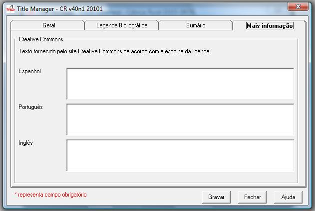
Text provided by the Creative Commons site in accordance with the choice of license
Field: 540, for each language an occurrence (es, en, pt).
- Subfield l: language of the license text (pt (Portuguese), es (Spanish), en (English))
- Subfield t: license text in HTML format
Deleting issue¶
1. Informing the issue and its sequential number 1. Click on Remove button
NOTE: This option only delete the record of the issue database, does not remove the issue from the website.
Issue database¶
ISIS Base. One record per issue. Each record contains the following tags:
| 030 | Short Title. Corresponds to 150 of TITLE | |
| 031 | Volume | |
| 032 | Number | |
| 033 | Title of the issue | |
| 034 | Party | |
| 035 | ISSN. Corresponds to the field of 400 TITLE | |
| 036 | Seq Num | |
| 041 | Complement. Identify a press release number|| | |
| 042 | Status | |
| 043 | Legend | |
| 043 | v | volume |
| 043 | w | Supplement volume |
| 043 | n | number |
| 043 | s | Supplement number |
| 043 | y | Year |
| 043 | c | City |
| 043 | m | last |
| 048 | l | Language header summary |
| 048 | h | Header Summary (Table of contents, summary, etc.) |
| 049 | c | Code sections |
| 049 | l | Language Sections |
| 049 | t | Title of the sections |
| 062 | Editor of the issue | |
| 064 | Date of publication. for the year (four digits), m month (two digits) | |
| 065 | Date ISO | |
| 085 | Controlled Vocabulary | |
| 091 | Date ISO to register the update date|| | |
| 097 | Cover | |
| 117 | Standard (vancouver, ISO, ABNT, etc.) | |
| 122 | Number of documents | |
| 130 | Title of the journal. Corresponds to the field of 100 of TITLE database|| | |
| 131 | SuplVol | |
| 132 | SuplNum | |
| 140 | Sponsor | |
| 200 | Markup done | |
| 230 | corresponds to the same field of TITLE database | |
| 540 | Text provided by the Creative Commons site in accordance with the choice of license | |
| 700 | position of the record on the basis of an issue. Value equal to 0, first record | |
| 701 | Counter record type. Value of 1 | |
| 706 | type / name of the record. Value of i (of issue) | |
| 930 | Journal’s acronym in uppercase | |
| 935 | ISSN of the journal at the time the issue had been published. Corresponds to the field of 935 TITLE |